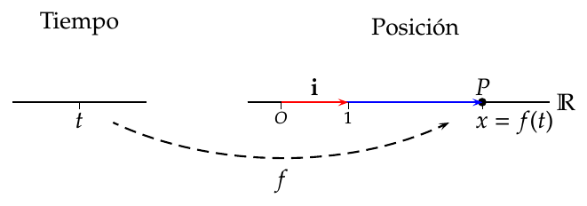
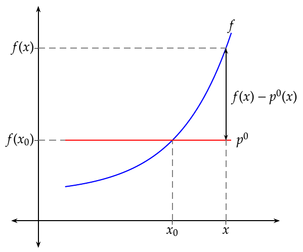
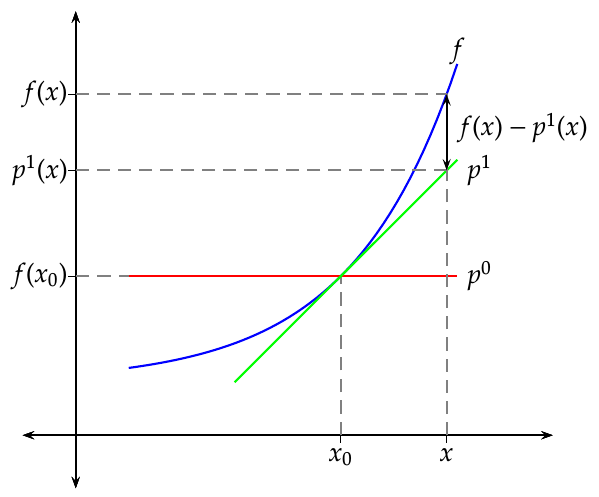
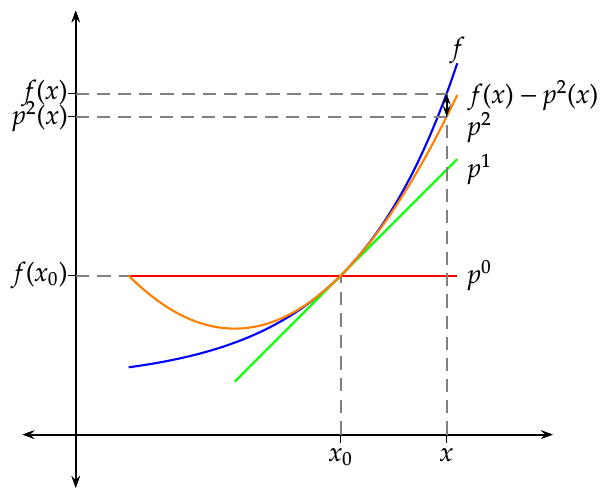
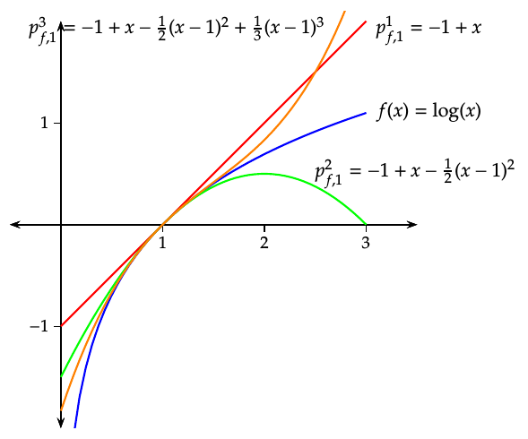
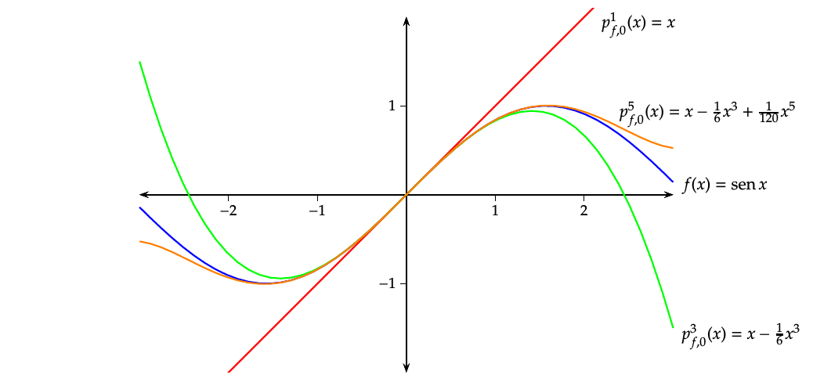

Cálculo diferencial en una variable El concepto de derivada Tasa de variación media Definición - Incremento. Dada una función $y=f(x)$, se llama incremento de $f$ en un intervalo $[a,b]$ a la diferencia entre el valor de $f$ en cada uno de los extremos del intervalo, y se nota $$\Delta y= f(b)-f(a).$$ Cuando $f$ es la función identidad $y=x$, se cumple que $$\Delta x=\Delta y= f(b)-f(a)=b-a,$$ y por tanto, el incremento de $x$ en un intervalo es la amplitud del intervalo. Esto nos permite escribir el intervalo $[a,b]$ como $[a,a+\Delta x]$. Definición - Tasa de variación media. Se llama tasa de variación media de $f$ en el intervalo $[a,a+\Delta x]$, al cociente entre el incremento de $y$ y el incremento de $x$ en dicho intervalo, y se escribe $$\textrm{TVM}\;f[a,a+\Delta x]=\frac{\Delta y}{\Delta x}=\frac{f(a+\Delta x)-f(a)}{\Delta x}.$$ Ejemplo. Consideremos la función $y=x^2$ que mide el área de un cuadrado de chapa metálica de lado $x$. Si en un determinado instante el lado del cuadrado es $a$, y sometemos la chapa a un proceso de calentamiento que aumenta el lado del cuadrado una cantidad $\Delta x$, ¿en cuánto se incrementará el área del cuadrado? $$ \begin{aligned} \Delta y &= f(a+\Delta x)-f(a)=(a+\Delta x)^2-a^2=\newline &= a^2+2a\Delta x+\Delta x^2-a^2=2a\Delta x+\Delta x^2. \end{aligned} $$ ¿Cuál será la tasa de variación media del área en el intervalo $[a,a+\Delta x]$? $$\operatorname{TVM}f[a,a+\Delta x]=\frac{\Delta y}{\Delta x}=\frac{2a\Delta x+\Delta x^2}{\Delta x}=2a+\Delta x.$$ Interpretación geométrica de la tasa de variación media La tasa de variación media de $f$ en el intervalo $[a,a+\Delta x]$ es la pendiente de la recta secante a $f$ en los puntos $(a,f(a))$ y $(a+\Delta x,f(a+\Delta x))$. Tasa de variación instantánea En muchas ocasiones, es interesante estudiar la tasa de variación que experimenta una función, no en intervalo, sino en un punto. Conocer la tendencia de variación de una función en un instante puede ayudarnos a predecir valores en instantes próximos. Definición - Tasa de variación instantánea y derivada. Dada una función $y=f(x)$, se llama tasa de variación instantánea de $f$ en un punto $a$, al límite de la tasa de variación media de $f$ en el intervalo $[a,a+\Delta x]$, cuando $\Delta x$ tiende a 0, y lo notaremos $$ \begin{aligned} \operatorname{TVI} f(a) &= \lim_{\Delta x\rightarrow 0} \operatorname{TVM}f[a,a+\Delta x]=\lim_{\Delta x\rightarrow 0}\frac{\Delta y}{\Delta x} = \newline &= \lim_{\Delta x\rightarrow 0}\frac{f(a+\Delta x)-f(a)}{\Delta x} \end{aligned} $$ Cuando este límite existe, se dice que la función $f$ es derivable en el punto $a$, y al valor del mismo se le llama derivada de $f$ en $a$, y se nota como $$f’(a) \mbox{ o bien } \frac{df}{dx}(a)$$ Ejemplo. Consideremos de nuevo la función $y=x^2$ que mide el área de un cuadrado de chapa metálica de lado $x$. Si en un determinado instante el lado del cuadrado es $a$, y sometemos la chapa a un proceso de calentamiento que aumenta el lado del cuadrado, ¿cuál es la tasa de variación instantánea del área del cuadrado en dicho instante? $$ \begin{aligned} \operatorname{TVI} f(a)&=\lim_{\Delta x\rightarrow 0}\frac{\Delta y}{\Delta x}=\lim_{\Delta x\rightarrow 0}\frac{f(a+\Delta x)-f(a)}{\Delta x} =\newline &=\lim_{\Delta x\rightarrow 0}\frac{2a\Delta x+\Delta x^2}{\Delta x}=\lim_{\Delta x\rightarrow 0} 2a+\Delta x= 2a. \end{aligned} $$ Así pues, $$f’(a)=2a,$$ lo que indica que la tendencia de crecimiento el área es del doble del valor del lado. El signo de $f’(a)$ indica la tendencia de crecimiento de $f$ en el punto $a$: $f’(a)>0$ indica que la tendencia es creciente. $f’(a)<0$ indica que la tendencia es decreciente. Interpretación geométrica de la tasa de variación instantánea La tasa de variación instantánea de $f$ en el punto $a$ es la pendiente de la recta tangente a $f$ en el punto $(a,f(a))$. Interpretación cinemática de la derivada Movimiento rectilineo Supongase que la función $f(t)$ describe la posición de un objeto móvil sobre la recta real en el instante $t$. Tomando como referencia el origen de coordenadas $O$ y el vector unitario $\mathbf{i}=(1)$, se puede representar la posición $P$ del móvil en cada instante $t$ mediante un vector $\vec{OP}=x\mathbf{i}$ donde $x=f(t)$.  También tiene sentido pensar en $f$ como una función que mide otras magnitudes como por ejemplo la temperatura de un cuerpo, la concentración de un gas o la cantidad de un compuesto en una reacción química en un instante $t$. En este contexto, si se toman los instantes $t=t_0$ y $t=t_0+\Delta t$, ambos del dominio $I$ de $f$, el vector $$\mathbf{v}_m=\frac{f(t_0+\Delta t)-f(t_0)}{\Delta t}$$ que se conoce como velocidad media de la trayectoria $f$ entre los instantes $t_0$ y $t_0+\Delta t$. Ejemplo. Un vehículo realiza un viaje de Madrid a Barcelona. Sea $f$ la función que da la posición el vehículo en cada instante. Si el vehículo parte de Madrid (km 0) a las 8 y llega a Barcelona (km 600) a las 14 horas, entonces la velocidad media del vehículo en el trayecto es $$\mathbf{v}_m=\frac{f(14)-f(8)}{14-8}=\frac{600-0}{6} = 100 km/h.$$ Siguiendo en este mismo contexto del movimiento rectilineo, la derivada de $f$ en el instante $t=t_0$ es el vector $$\mathbf{v}=f’(t_0)=\lim_{\Delta x\rightarrow 0}\frac{f(t_0+\Delta t)-f(t_0)}{\Delta t},$$ que se conoce, siempre que exista el límite, como velocidad instantánea o simplemente la velocidad de la trayectoria $f$ en el instante $t_0$. Es decir, la derivada de la posición respecto del tiempo, es un campo de vectores que recibe el nombre de velocidad a lo largo de la trayectoria $f$. Siguiendo con el ejemplo anterior, lo que marca el velocímetro en un determinado instante sería el módulo del vector velocidad en ese instante. Generalización al movimiento curvilineo La derivada como velocidad a lo largo de una trayectoria en la recta real puede generalizarse a trayectorias en cualquier espacio euclídeo $\mathbb{R}^n$. Para el caso del plano real $\mathbb{R}^2$, si $f(t)$ describe la posición de un objeto móvil en el plano en el instante $t$, tomando como referencia el origen de coordenadas $O$ y los vectores coordenados ${\mathbf{i}=(1,0),\mathbf{j}=(0,1)}$, se puede representar la posición $P$ del móvil en cada instante $t$ mediante un vector $\vec{OP}=x(t)\mathbf{i}+y(t)\mathbf{j}$ cuyas coordenadas $$ \begin{cases} x=x(t)\newline y=y(t) \end{cases} \quad t\in I\subseteq \mathbb{R} $$ se conocen como funciones coordenadas de $f$ y se escribe $f(t)=(x(t),y(t))$. Velocidad en una trayectoria curvilinea en el plano En este contexto de una trayectoria $f(t)=(x(t),y(t))$ en el plano real $\mathbb{R}^2$, para un instante $t=t_0$, si existe el vector $$\mathbf{v} = \lim_{\Delta t\rightarrow 0} \frac{f(t_0+\Delta t)-f(t_0)}{\Delta t},$$ entonces $f$ es derivable en el instante $t=t_0$ y el vector $\mathbf{v}=f’(t_0)$ se conoce como velocidad de $f$ en ese instante. Como $f(t_0)=(x(t),y(t))$, $$ \begin{aligned} f’(t)&=\lim_{\Delta t\rightarrow 0} \frac{f(t_0+\Delta t)-f(t_0)}{\Delta t} = \lim_{\Delta t\rightarrow 0} \frac{(x(t_0+\Delta t),y(t_0+\Delta t))-(x(t_0),y(t_0))}{\Delta t} =\newline &= \lim_{\Delta t\rightarrow 0} \left(\frac{x(t_0+\Delta t)-x(t_0)}{\Delta t},\frac{y(t_0+\Delta t)-y(t_0)}{\Delta t}\right) =\newline &= \left(\lim_{\Delta t\rightarrow 0}\frac{x(t_0+\Delta t)-x(t_0)}{\Delta t},\lim_{\Delta t\rightarrow 0}\frac{y(t_0+\Delta t)-y(t_0)}{\Delta t}\right) = (x’(t_0),y’(t_0)). \end{aligned} $$ luego $$\mathbf{v} = x’(t_0)\mathbf{i}+y’(t_0)\mathbf{j}.$$ Ejemplo. Dada la trayectoria $f(t) = (\cos t,\operatorname{sen} t)$, $t\in \mathbb{R}$, cuya imagen es la circunferencia de centro el origen de coordenas y radio 1, sus funciones coordenadas son $x(t) = \cos t$, $y(t) = \operatorname{sen} t$, $t\in \mathbb{R}$, y su velocidad es $$\mathbf{v}=f’(t)=(x’(t),y’(t))=(-\operatorname{sen} t, \cos t).$$ En el instante $t=\pi/4$, el móvil estará en la posición $f(\pi/4) = (\cos(\pi/4),\operatorname{sen}(\pi/4)) =(\sqrt{2}/2,\sqrt{2}/2)$ y se moverá con una velocidad $\mathbf{v}=f’(\pi/4)=(-\operatorname{sen}(\pi/4),\cos(\pi/4))=(-\sqrt{2}/2,\sqrt{2}/2)$. Obsérvese que el módulo del vector velocidad siempre será 1 ya que $\lvert \mathbf{v}\rvert = \sqrt{(-\operatorname{sen} t)^2+(\cos t)^2}=1$. Recta tangente a una trayectoria Recta tangente a una trayectoria en el plano Los vectores paralelos a la velocidad $\mathbf{v}$ se denominan vectores tangentes a la trayectoria $f$ en el instante $t=t_0$, y la recta que pasa por $P=f(t_0)$ dirigida por $\mathbf{v}$ es la recta tangente a $f$ cuando $t=t_0$. Definición - Recta tangente a una trayectoria. Dada una trayectoria $f$ sobre el plano real $\mathbb{R}^2$, se llama recta tangente a $f$ para $t=t_0$ a la recta de ecuación $$ \begin{align*} l: (x,y)&= f(t_0)+tf’(t_0) = (x(t_0),y(t_0))+t(x’(t_0),y’(t_0))\newline &= (x(t_0)+tx’(t_0),y(t_0)+ty’(t_0)). \end{align*} $$ Ejemplo. Se ha visto que para la trayectoria $f(t) = (\cos t,\operatorname{sen} t)$, $t\in \mathbb{R}$, cuya imagen es la circunferencia de centro el origen de coordenas y radio 1, en el instante $t=\pi/4$ la posición del móvil era $f(\pi/4)=(\sqrt{2}/2,\sqrt{2}/2)$ y su velocidad $\mathbf{v}=(-\sqrt{2}/2,\sqrt{2}/2)$, de modo que la recta tangente a $f$ en ese instante es $$l: X=f(\pi/2)+t\mathbf{v} = \left(\frac{\sqrt{2}}{2},\frac{\sqrt{2}}{2}\right)+t\left(\frac{-\sqrt{2}}{2},\frac{\sqrt{2}}{2}\right) = \left(\frac{\sqrt{2}}{2}-t\frac{\sqrt{2}}{2},\frac{\sqrt{2}}{2}+t\frac{\sqrt{2}}{2}\right).$$ De la ecuación vectorial de la recta tangente a $f$ para $t=t_0$, se obtiene que sus funciones cartesianas son $$\begin{cases} x=x(t_0)+tx’(t_0)\newline y=y(t_0)+ty’(t_0) \end{cases} \quad t\in \mathbb{R},$$ y despejando $t$ en ambas ecuaciones e igualando se llega a la ecuación cartesiana de la recta tangente $$\frac{x-x(t_0)}{x’(t_0)}=\frac{y-y(t_0)}{y’(t_0)},$$ si $x’(t_0)\neq 0$ e $y’(t_0)\neq 0$, y de ahí a la ecuación en la forma punto-pendiente $$y-y(t_0)=\frac{y’(t_0)}{x’(t_0)}(x-x(t_0)).$$ Partiendo de la ecuación vectorial de la tangente del ejemplo anterior $l=\left(\frac{\sqrt{2}}{2}-t\frac{\sqrt{2}}{2},\frac{\sqrt{2}}{2}+t\frac{\sqrt{2}}{2}\right)$, su ecuación cartesiana es $$ \begin{gathered} \frac{x-\sqrt{2}/2}{-\sqrt{2}/2} = \frac{y-\sqrt{2}/2}{\sqrt{2}/2}\Rightarrow\newline y-\sqrt{2}/2 = \frac{-\sqrt{2}/2}{\sqrt{2}/2}(x-\sqrt{2}/2) \Rightarrow \newline y=-x+\sqrt{2}. \end{gathered} $$ Recta normal a una trayectoria en el plano Se ha visto que la recta tangente a una trayectoria $f$ cuando $t=t_0$ es la recta que pasa por el punto el punto $P=f(t_0)$ dirigida por el vector velocidad $\mathbf{v}=f’(t_0)=(x’(t_0),y’(t_0))$. Si en lugar de tomar ese vector se toma como vector director el vector $\mathbf{w}=(y’(t_0),-x’(t_0))$, que es ortogonal a $\mathbf{v}$, se obtiene otra recta que se conoce como recta normal a la trayectoria $f$ cuanto $t=t_0$. Definición - Recta normal a una trayectoria. Dada una trayectoria $f$ sobre el plano real $\mathbb{R}^2$, se llama recta normal a $f$ para $t=t_0$ a la recta de ecuación $$ \begin{aligned} l: (x,y) &= (x(t_0),y(t_0))+t(y’(t_0),-x’(t_0)) =\newline &= (x(t_0)+ty’(t_0),y(t_0)-tx’(t_0)). \end{aligned} $$ Su ecuación cartesiana es $$\frac{x-x(t_0)}{y’(t_0)} = \frac{y-y(t_0)}{-x’(t_0)},$$ y su ecuación en la forma punto pendiente $$y-y(t_0) = \frac{-x’(t_0)}{y’(t_0)}(x-x(t_0)).$$ La recta normal es perpendicular a la recta tangente ya que sus vectores directores son ortogonales. Ejemplo. Siguiendo con el ejemplo de la trayectoria $f(t) = (\cos t,\operatorname{sen} t)$, $t\in \mathbb{R}$, la recta normal en el instante $t=\pi/4$ es $$ \begin{aligned} l&: (x,y)=(\cos(\pi/2),\operatorname{sen}(\pi/2))+t(\cos(\pi/2),\operatorname{sen}(\pi/2)) =\newline & \left(\frac{\sqrt{2}}{2},\frac{\sqrt{2}}{2}\right)+t\left(\frac{\sqrt{2}}{2},\frac{\sqrt{2}}{2}\right) =\left(\frac{\sqrt{2}}{2}+t\frac{\sqrt{2}}{2},\frac{\sqrt{2}}{2}+t\frac{\sqrt{2}}{2}\right), \end{aligned} $$ y su ecuación cartesiana es $$\frac{x-\sqrt{2}/2}{\sqrt{2}/2} = \frac{y-\sqrt{2}/2}{\sqrt{2}/2}\Rightarrow y-\sqrt{2}/2 = \frac{\sqrt{2}/2}{\sqrt{2}/2}(x-\sqrt{2}/2) \Rightarrow y=x.$$ Rectas tangente y normal a una función Un caso particular de las recta tangente y normal a una trayectoria es son la recta tangente y normal a una función de una variable real. Si se tiene la función $y=f(x)$, $x\in I\subseteq \mathbb{R}$, una trayectoria que traza la gráfica de $f$ es $$g(t) = (t,f(t)) \quad t\in I,$$ y su velocidad es $$g’(t) = (1,f’(t)),$$ de modo que la recta tangente para $t=x_0$ es $$\frac{x-x_0}{1} = \frac{y-f(x_0)}{f’(x_0)} \Rightarrow y-f(x_0) = f’(x_0)(x-x_0),$$ y la recta normal es $$\frac{x-x_0}{f’(x_0)} = \frac{y-f(x_0)}{-1} \Rightarrow y-f(x_0) = \frac{-1}{f’(x_0)}(x-x_0),$$ Ejemplo. Dada la función $y=f(x)=x^2$, la trayectoria que dibuja la gráfica de esta función es $g(t)=(t,t^2)$ y su velocidad es $g’(t)=(1,2t)$, de modo que en el punto $(1,1)$, que se alcanza en el instante $t=1$, la recta tangente es $$\frac{x-1}{1} = \frac{y-1}{2} \Rightarrow y-1 = 2(x-1) \Rightarrow y = 2x-1,$$ y la recta normal es $$\frac{x-1}{2} = \frac{y-1}{-1} \Rightarrow y-1 = \frac{-1}{2}(x-1) \Rightarrow y = \frac{-x}{2}+\frac{3}{2}.$$ Recta tangente a una trayectoria en el espacio El concepto de recta tangente a una trayectoria en el plano real puede extenderse fácilmente a trayectorias en el espacio real $\mathbb{R}^3$. Si $f(t)=(x(t),y(t),z(t))$, $t\in I\subseteq \mathbb{R}$, es una trayectoria en el espacio real $\mathbb{R}^3$, entonces el móvil que recorre esta trayectoria en el instante $t=t_0$, ocupará la posición $P=(x(t_0),y(t_0),z(t_0))$ y tendrá una velocidad $\mathbf{v}=f’(t)=(x’(t),y’(t),z’(t))$, de manera que la recta tangente a $f$ en ese instante será $$ \begin{aligned} l&: (x,y,z)=(x(t_0),y(t_0),z(t_0))+t(x’(t_0),y’(t_0),z’(t_0)) =\newline &= (x(t_0)+tx’(t_0),y(t_0)+ty’(t_0),z(t_0)+tz’(t_0)), \end{aligned} $$ cuyas ecuaciones cartesianas son $$\frac{x-x(t_0)}{x’(t_0)}=\frac{y-y(t_0)}{y’(t_0)}=\frac{z-z(t_0)}{z’(t_0)},$$ siempre que $x’(t_0)\neq 0$, $y’(t_0)\neq 0$ y $z’(t_0)\neq 0$. Ejemplo. Dada la trayectoria del espacio $f(t)=(\cos t, \operatorname{sen} t, t)$, $t\in \mathbb{R}$, en el instante $t=\pi/2$, la trayectoria pasará por el punto $$f(\pi/2)=(\cos(\pi/2),\operatorname{sen}(\pi/2),\pi/2)=(0,1,\pi/2),$$ con una velocidad $$\mathbf{v}=f’(\pi/2)=(-\operatorname{sen}(\pi/2),\cos(\pi/2), 1)=(-1,0,1),$$ y la tangente en ese punto es $$l:(x,y,z)=(0,1,\pi/2)+t(-1,0,1) = (-t,1,t+\pi/2).$$ Ejemplo interactivo Álgebra de derivadas Propiedades de la derivada Si $y=c$, es una función constante, entonces $y’=0$. Si $y=x$, es la función identidad, entonces $y’=1$. Si $u=f(x)$ y $v=g(x)$ son dos funciones diferenciables, entonces $(u+v)’=u’+v'$ $(u-v)’=u’-v'$ $(u\cdot v)’=u’\cdot v+ u\cdot v'$ $\left(\dfrac{u}{v}\right)’=\dfrac{u’\cdot v-u\cdot v’}{v^2}$ Derivada de una función compuesta: La regla de la cadena Teorema - Regla de la cadena. Si $y=f\circ g$ es la composición de dos funciones $y=f(z)$ y $z=g(x)$, entonces $$(f\circ g)’(x)=f’(g(x))g’(x),$$ Demostración Resulta sencillo demostrarlo con la notación diferencial $$\frac{dy}{dx}=\frac{dy}{dz}\frac{dz}{dx}=f’(z)g’(x)=f’(g(x))g’(x).$$ Ejemplo. Si $f(z)=\operatorname{sen} z$ y $g(x)=x^2$, entonces $f\circ g(x)=\operatorname{sen}(x^2)$ y, aplicando la regla de la cadena, su derivada vale $$ (f\circ g)’(x)=f’(g(x))g’(x) = \cos g(x) 2x = \cos(x^2)2x. $$ Por otro lado, $g\circ f(z)= (\sin z)^2$ y, de nuevo aplicando la regla de la cadena, su derivada vale $$ (g\circ f)’(z)=g’(f(z))f’(z) = 2f(z)\cos z = 2\operatorname{sen} z\cos z. $$ Derivada de la inversa de una función Teorema - Derivada de la función inversa. Si $y=f(x)$ es una función y $x=f^{-1}(y)$ es su inversa, entonces $$\left(f^{-1}\right)’(y)=\frac{1}{f’(x)}=\frac{1}{f’(f^{-1}(y))}$$ Demostración También resulta sencillo de demostrar con la notación diferencial $$\frac{dx}{dy}=\frac{1}{dy/dx}=\frac{1}{f’(x)}=\frac{1}{f’(f^{-1}(y))}$$ Ejemplo. La inversa de la función exponencial $y=f(x)=e^x$ es el logaritmo neperiano $x=f^{-1}(y)=\ln y$, de modo que para calcular la derivada del logaritmo podemos utilizar el teorema de la derivada de la inversa y se tiene $$ \left(f^{-1}\right)’(y)=\frac{1}{f’(x)}=\frac{1}{e^x}=\frac{1}{e^{\ln y}}=\frac{1}{y}. $$ Estudio del crecimiento de una función La principal aplicación de la derivada es el estudio del crecimiento de una función mediante el signo de la derivada. Teorema. Si $f$ es una función cuya derivada existe en un intervalo $I$, entonces: Si $\forall x\in I\ f’(x)\geq 0$ entonces $f$ es creciente en el intervalo $I$. Si $\forall x\in I\ f’(x)\leq 0$ entonces $f$ es decreciente en el intervalo $I$. Ejemplo. La función $f(x)=x^3$ es creciente en todo $\mathbb{R}$ ya que $\forall x\in \mathbb{R}\ f’(x)\geq 0$. Una función puede ser creciente o decreciente en un intervalo y no tener derivada.* Ejemplo. Consideremos la función $f(x)=x^4-2x^2+1$. Su derivada $f’(x)=4x^3-4x$ está definida en todo $\mathbb{R}$ y es continua. Determinación de los extremos relativos de una función Como consecuencia del resultado anterior, la derivada también sirve para determinar los extremos relativos de una función. Teorema - Criterio de la primera derivada. Sea $f$ es una función cuya derivada existe en un intervalo $I$, y sea $x_0\in I$ tal que $f’(x_0)=0$, entonces: Si existe un $\delta>0$ tal que $\forall x\in(x_0-\delta,x_0)\ f’(x)>0$ y $\forall x\in(x_0,x_0+\delta)\ f’(x)<0$ entonces $f$ tiene un máximo relativo en $x_0$. Si existe un $\delta>0$ tal que $\forall x\in(x_0-\delta,x_0)\ f’(x)<0$ y $\forall x\in(x_0,x_0+\delta)\ f’(x)>0$ entonces $f$ tiene un mínimo relativo en $x_0$. Si existe un $\delta>0$ tal que $\forall x\in(x_0-\delta,x_0)\ f’(x)>0$ y $\forall x\in(x_0,x_0+\delta)\ f’(x)>0$ entonces $f$ tiene un punto de inflexión creciente en $x_0$. Si existe un $\delta>0$ tal que $\forall x\in(x_0-\delta,x_0)\ f’(x)<0$ y $\forall x\in(x_0,x_0+\delta)\ f’(x)<0$ entonces $f$ tiene un punto de inflexión decreciente en $x_0$. Los puntos donde se anula la derivada de una función se denominan puntos críticos. Ejemplo. Consideremos de nuevo la función $f(x)=x^4-2x^2+1$. Su derivada $f’(x)=4x^3-4x$ está definida en todo $\mathbb{R}$ y es continua. Estudio de la concavidad de una función La concavidad de una función puede estudiarse mediante el signo de la segunda derivada. Teorema - Criterio de la segunda derivada. Si $f$ es una función cuya segundaderivada existe en un intervalo $I$, entonces: Si $\forall x\in I\ f^{\prime\prime}(x)\geq 0$ entonces $f$ es cóncava en el intervalo $I$. Si $\forall x\in I\ f^{\prime\prime}(x)\leq 0$ entonces $f$ es convexa en el intervalo $I$. Ejemplo. La función $f(x)=x^2$ tiene segunda derivada $f^{\prime\prime}(x)=2>0$ y por tanto es cóncava en todo $\mathbb{R}$. Observación. Una función puede ser cóncava o convexa en un intervalo y no tener derivada. Ejemplo. Consideremos de nuevo la función $f(x)=x^4-2x^2+1$. Su segunda derivada $f^{\prime\prime}(x)=12x^2-4$ está definida en todo $\mathbb{R}$ y es continua. Polinomios de Taylor Aproximación de una función mediante un polinomio Una aplicación muy útil de la derivada es la aproximación de funciones mediante polinomios. Los polinomios son funciones sencillas de calcular (mediante sumas y productos), que tienen muy buenas propiedades: Están definidos en todos los números reales. Son funciones continuas. Son derivables hasta cualquier orden y sus derivadas son continuas. Objetivo. Aproximar una función $f(x)$ mediante un polinomio $p(x)$ cerca de un valor $x=x_0$. Aproximación mediante un polinomio de grado 0 Un polinomio de grado 0 tiene ecuación $$p(x) = c_0,$$ donde $c_0$ es una constante. Como el polinomio debe valer lo que la función en el punto $x_0$, debe cumplir $$p(x_0) = c_0 = f(x_0).$$ En consecuencia, el polinomio de grado 0 que mejor aproxima a $f$ en un entorno de $x_0$ es $$p(x) = f(x_0).$$  Aproximación mediante un polinomio de grado 1 Un polinomio de grado 1 es una recta y tiene ecuación $$p(x) = c_0+c_1x,$$ aunque también puede escribirse $$p(x) = c_0+c_1(x-x_0).$$ De entre todos los polinomios de grado 1, el que mejor aproxima a $f$ en entorno de $x_0$ será el que cumpla las dos condiciones siguientes: $p$ y $f$ valen lo mismo en $x_0$: $p(x_0) = f(x_0)$, $p$ y $f$ tienen la misma tasa de crecimiento en $a$: $p’(x_0) = f’(x_0)$. Esta última condición nos asegura que en un entorno de $x_0$, $p$ y $f$ tienen aproximadamente la misma tendencia de crecimiento, pero requiere que la función $f$ sea derivable en $x_0$. Imponiendo las condiciones anteriores tenemos $p(x)=c_0+c_1(x-x_0) \Rightarrow p(x_0)=c_0+c_1(x_0-x_0)=c_0=f(x_0)$, $p’(x)=c_1 \Rightarrow p’(x_0)=c_1=f’(x_0)$. Así pues, el polinomio de grado 1 que mejor aproxima a $f$ en un entorno de $x_0$ es $$p(x) = f(x_0)+f ‘(x_0)(x-x_0),$$ que resulta ser la recta tangente a $f$ en el punto $(x_0,f(x_0))$.  Aproximación mediante un polinomio de grado 2 Un polinomio de grado 2 es una parábola y tiene ecuación $$p(x) = c_0+c_1x+c_2x^2,$$ aunque también puede escribirse $$p(x) = c_0+c_1(x-x_0)+c_2(x-x_0)^2.$$ De entre todos los polinomio de grado 2, el que mejor aproxima a $f$ en entorno de $x_0$ será el que cumpla las tres condiciones siguientes: $p$ y $f$ valen lo mismo en $x_0$: $p(x_0) = f(x_0)$, $p$ y $f$ tienen la misma tasa de crecimiento en $x_0$: $p’(x_0) = f’(x_0)$. $p$ y $f$ tienen la misma curvatura en $x_0$: $p’’(x_0)=f’’(x_0)$. Esta última condición requiere que la función $f$ sea dos veces derivable en $x_0$. Imponiendo las condiciones anteriores tenemos $p(x)=c_0+c_1(x-x_0)+c_2(x-x_0)^2 \Rightarrow p(x_0)=c_0=f(x_0)$, $p’(x)=c_1+2c_2(x-x_0) \Rightarrow p’(x_0)=c_1+2c_2(x_0-x_0)=c_1=f’(x_0)$, $p’’(x)=2c_2 \Rightarrow p’’(x_0)=2c_2=f’’(x_0) \Rightarrow c_2=\frac{f’’(x_0)}{2}$. Así pues, el polinomio de grado 2 que mejor aproxima a $f$ en un entorno de $x_0$ es $$p(x) = f(x_0)+f’(x_0)(x-x_0)+\frac{f’’(x_0)}{2}(x-x_0)^2.$$  Aproximación mediante un polinomio de grado $n$ Un polinomio de grado $n$ tiene ecuación $$p(x) = c_0+c_1x+c_2x^2+\cdots +c_nx^n,$$ aunque también puede escribirse $$p(x) = c_0+c_1(x-x_0)+c_2(x-x_0)^2+\cdots +c_n(x-x_0)^n.$$ De entre todos los polinomio de grado $n$, el que mejor aproxima a $f$ en entorno de $x_0$ será el que cumpla las $n+1$ condiciones siguientes: $p(x_0) = f(x_0)$, $p’(x_0) = f’(x_0)$, $p’’(x_0)=f’’(x_0)$, $\cdots$ $p^{(n}(x_0)=f^{(n}(x_0)$. Las sucesivas derivadas de $p$ valen $$ \begin{aligned} p(x) &= c_0+c_1(x-x_0)+c_2(x-x_0)^2+\cdots +c_n(x-x_0)^n,\newline p’(x)& = c_1+2c_2(x-x_0)+\cdots +nc_n(x-x_0)^{n-1},\newline p’’(x)& = 2c_2+\cdots +n(n-1)c_n(x-x_0)^{n-2},\newline \vdots\ \newline p^{(n}(x)&= n(n-1)(n-2)\cdots 1 c_n=n!c_n. \end{aligned} $$ Imponiendo las condiciones anteriores se tiene $p(x_0) = c_0+c_1(x_0-x_0)+c_2(x_0-x_0)^2+\cdots +c_n(x_0-x_0)^n=c_0=f(x_0),$ $p’(x_0) = c_1+2c_2(x_0-x_0)+\cdots +nc_n(x_0-x_0)^{n-1}=c_1=f’(x_0),$ $p’’(x_0) = 2c_2+\cdots +n(n-1)c_n(x_0-x_0)^{n-2}=2c_2=f’’(x_0)\Rightarrow c_2=\frac{f’’(x_0)}{2},$ $\cdots$ $p^{(n}(x_0)=n!c_n=f^{(n}(x_0)=c_n=\frac{f^{(n}(x_0)}{n!}$. Definición - Polinomio de Taylor de orden $n$ para $f$ en el punto $a$. Dada una función $f$, $n$ veces derivable en $x=x_0$, se define el polinomio de Taylor de orden $n$ para $f$ en $x_0$ como $$ \begin{aligned} p_{f,x_0}^n(x)&=f(x_0)+f’(x_0)(x-x_0)+\frac{f’’(x_0)}{2}(x-x_0)^2+\cdots +\frac{f^{(n}(x_0)}{n!}(x-x_0)^n = \newline &=\sum_{i=0}^{n}\frac{f^{(i}(x_0)}{i!}(x-x_0)^i, \end{aligned} $$ o bien, escribiendo $x=x_0+h$ $$ \begin{aligned} p_f^n(x_0+h) &= f(x_0)+f’(x_0)h+\frac{f’’(x_0)}{2}h^2+\cdots +\frac{f^{(n}(x_0)}{n!}h^n =\newline &= \sum_{i=0}^{n}\frac{f^{(i}(x_0)}{i!}h^i. \end{aligned} $$ El polinomio de Taylor de orden $n$ para $f$ en $x_0$ es el polinomio de orden $n$ que mejor aproxima a $f$ alrededor de $x_0$, ya que es el único que cumple las $n+1$ condiciones anteriores. Ejemplo. Vamos a aproximar la función $f(x)=\log x$ en un entorno del punto $1$ mediante un polinomio de grado $3$. La ecuación del polinomio de Taylor de orden $3$ para $f$ en el punto $1$ es $$p_{f,1}^3(x)=f(1)+f’(1)(x-1)+\frac{f’’(1)}{2}(x-1)^2+\frac{f’’’(1)}{3!}(x-1)^3.$$ Calculamos las tres primeras derivadas de $f$ en $1$: $$ \begin{array}{lll} f(x)=\log x & \quad & f(1)=\log 1 =0,\newline f’(x)=1/x & & f’(1)=1/1=1,\newline f’’(x)=-1/x^2 & & f’’(1)=-1/1^2=-1,\newline f’’’(x)=2/x^3 & & f’’’(1)=2/1^3=2. \end{array} $$ Sustituyendo en la ecuación del polinomio se tiene $$p_{f,1}^3(x)=0+1(x-1)+\frac{-1}{2}(x-1)^2+\frac{2}{3!}(x-1)^3= \frac{2}{3}x^3-\frac{3}{2}x^2+3x-\frac{11}{6}.$$  Polinomio de Maclaurin de orden $n$ La ecuación del polinomio de Taylor se simplifica cuando el punto en torno al cual queremos aproximar es el $0$. Definición - Polinomio de Maclaurin de orden $n$ para $f$. Dada una función $f$, $n$ veces derivable en $0$, se define el polinomio de Maclaurin de orden $n$ para $f$ como $$ \begin{aligned} p_{f,0}^n(x) &= f(0)+f’(0)x+\frac{f’’(0)}{2}x^2+\cdots +\frac{f^{(n}(0)}{n!}x^n =\newline &= \sum_{i=0}^{n}\frac{f^{(i}(0)}{i!}x^i. \end{aligned} $$ Ejemplo. Vamos a aproximar la función $f(x)=\operatorname{sen} x$ en un entorno del punto $0$ mediante un polinomio de grado $3$. La ecuación del polinomio de Maclaurin de orden $3$ para $f$ es $$p_{f,0}^3(x)=f(0)+f’(0)x+\frac{f’’(0)}{2}x^2+\frac{f’’’(0)}{3!}x^3.$$ Calculamos las tres primeras derivadas de $f$ en $0$: $$ \begin{array}{lll} f(x)=\operatorname{sen} x & \quad & f(0)=\operatorname{sen} 0 =0,\newline f’(x)=\cos x & & f’(0)=\cos 0=1,\newline f’’(x)=-\operatorname{sen} x & & f’’(0)=-\operatorname{sen} 0=0,\newline f’’’(x)=-\cos x & & f’’’(0)=-\cos 0=-1. \end{array} $$ Sustituyendo en la ecuación del polinomio obtenemos $$p_{f,0}^3(x)=0+1\cdot x+\frac{0}{2}x^2+\frac{-1}{3!}x^3= x-\frac{x^3}{6}.$$  Polinomios de Maclaurin de funciones elementales $$\renewcommand{\arraystretch}{2.5} \begin{array}{|c|c|} \hline f(x) & p_{f,0}^n(x) \newline \hline\hline \operatorname{sen} x & \displaystyle x-\frac{x^3}{3!}+\frac{x^5}{5!}-\cdots +(-1)^k\frac{x^{2k-1}}{(2k-1)!} \mbox{ si $n=2k$ o $n=2k-1$}\newline \hline \cos x & \displaystyle 1-\frac{x^2}{2!}+\frac{x^4}{4!}-\cdots +(-1)^k\frac{x^{2k}}{(2k)!} \mbox{ si $n=2k$ o $n=2k+1$}\newline \hline \operatorname{arctg} x & \displaystyle x-\frac{x^3}{3}+\frac{x^5}{5}-\cdots +(-1)^k\frac{x^{2k-1}}{(2k-1)} \mbox{ si $n=2k$ o $n=2k-1$}\newline \hline e^x & \displaystyle 1+x+\frac{x^2}{2!}+\frac{x^3}{3!}+\cdots + \frac{x^n}{n!}\newline \hline \log(1+x) & \displaystyle x-\frac{x^2}{2}+\frac{x^3}{3}-\cdots +(-1)^{n-1}\frac{x^n}{n}\newline \hline \end{array}$$ Resto de Taylor Los polinomios de Taylor permiten calcular el valor aproximado de una función cerca de un valor $x_0$, pero siempre se comete un error en dicha aproximación. Definición - Resto de Taylor. Si $f$ es una función para la que existe el su polinomio de Taylor de orden $n$ en $x_0$, $p_{f,x_0}^n$, entonces se define el resto de Taylor de orden $n$ para $f$ en $x_0$ como $$r_{f,x_0}^n(x)=f(x)-p_{f,x_0}^n(x).$$ El resto mide el error cometido al aproximar $f(x)$ mediante $p_{f,x_0}^n(x)$ y permite expresar la función $f$ como la suma de un polinomio de Taylor más su resto correspondiente: $$f(x)=p_{f,x_0}^n(x) + r_{f,x_0}^n(x).$$ Esta expresión se conoce como fórmula de Taylor de orden $n$ para $f$ en $x_0$. Se pude demostrar, además, que $$\lim_{h\rightarrow 0}\frac{r_{f,x_0}^n(x_0+h)}{h^n}=0,$$ lo cual indica que el resto $r_{f,x_0}^n(x_0+h)$ es mucho menor que $h^n$. Derivada Recta Tangente Anterior Límites y continuidad Siguiente Cálculo integral